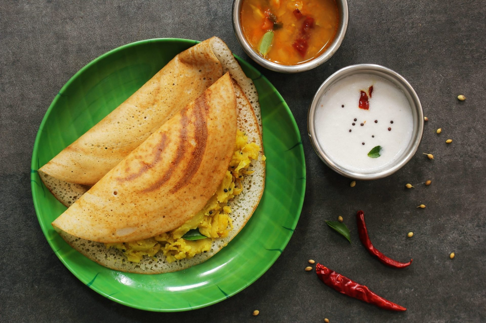

Masala Dosa Recipe

Description
Masala dosa is a popular South Indian dish consisting of a large, paper-thin, crispy rice and
lentil crepe
stuffed with a spiced potato filling. The golden-brown crepe is celebrated for its delicate, crunchy texture and
slightly tangy flavor, which comes from fermenting the batter overnight. Traditionally served
rolled or folded
in half, it is accompanied by flavorful sambar and cool coconut chutney.
The dish originated in the coastal town of Udupi in Karnataka, India, likely inside the kitchens of local temple
cooks and restaurants. It evolved from the plain dosa when creative cooks began stuffing the crepe with
a dry,
spiced potato mash to bypass a royal shortage of onion-based curries. This clever adaptation quickly transformed
a regional breakfast staple into one of India's most iconic and universally loved culinary creations.
Ingredients
- ¼ cup oil
- 3 cups idli-dosa rice
- 1 cup skinless black lentils (urad dal)
- 4 large potatoes, boiled and mashed
- 1 large onion, sliced
- 2 small green chile peppers, chopped
- 1 tablespoon master-chef dosa masala powder
Steps
- Wash and soak rice and lentils in water for 5 hours. Drain and blend with a little water to form a smooth
batter. Stir in salt and let the batter ferment in a warm place for 8 hours.
- Heat 1 tablespoon oil in a skillet over medium heat. Add onion and chile peppers; cook until tender. Stir in
the mashed potatoes and dosa masala powder. Season with salt, mix well, and cook for 5 minutes; set
aside.
- Heat a flat griddle or tawa over medium heat and lightly grease with oil. Pour a ladleful of batter
in the
center and spread it outward in a circular motion to form a thin crepe. Drizzle a little oil around the
edges.
- Cook until the bottom turns golden brown and crispy. Place a scoop of the potato mixture in the center. Fold
the dosa over the filling and serve hot.
And there you have crispy masala dosa ready!
< Previous Recipe
Return to Home